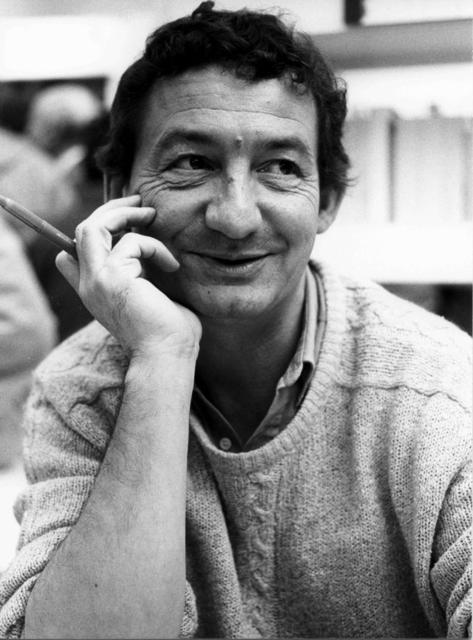
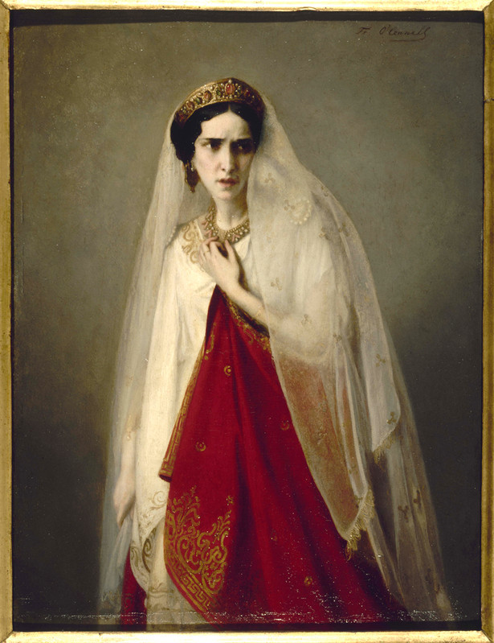

To be, or not to be, that is the question:
Whether 'tis Nobler in the mind to suffer
The Slings and Arrows of outrageous Fortune,
Or to take Arms against a Sea of troubles,
And by opposing end them: to die, to sleep
No more; and by a sleep, to say we end
The Heart-ache, and the thousand Natural shocks
That Flesh is heir to? 'Tis a consummation
Devoutly to be wished. To die, to sleep,
To sleep, perchance to Dream; aye, there's the rub,
For in that sleep of death, what dreams may come,
When we have shuffled off this mortal coil,
Must give us pause. There's the respect
That makes Calamity of so long life:
For who would bear the Whips and Scorns of time,
The Oppressor's wrong, the proud man's Contumely,
The pangs of despised Love, the Law’s delay,
The insolence of Office, and the Spurns
That patient merit of the unworthy takes,
When he himself might his Quietus make
With a bare Bodkin? Who would Fardels bear,
To grunt and sweat under a weary life,
But that the dread of something after death,
The undiscovered Country, from whose bourn
No Traveller returns, Puzzles the will,
And makes us rather bear those ills we have,
Than fly to others that we know not of.
Thus Conscience does make Cowards of us all,
And thus the Native hue of Resolution
Is sicklied o'er, with the pale cast of Thought,
And enterprises of great pitch and moment,
With this regard their Currents turn awry,
And lose the name of Action. Soft you now,
The fair Ophelia? Nymph, in thy Orisons
Be all my sins remembered.
Bla blu blu

"Les Bretons sont-ils des gens comme nous? Je dis non.
Le Breton est têtu. Sinon pourquoi dirions-nous d'un Breton: "Il est têtu comme un Breton"? Alexandre Vialatte, le plus grand écrivain français avant Dutour et Poulidor, disait que "le loup est appelé ainsi à cause de ses grandes dents." De la même façon, le Breton est appelé ainsi parcequ'il est têtu. Je n'en démordrai pas.
On a pu pouver scientifiquement que le Breton était têtu. Les travaux des plus éminents chercheurs du CNRS ont démontré théoriquement que le Breton trempé est encore plus résistant aux fortes pressions que l'acier trempé. Pour passer de la théorie à la pratique, il suffirait de porter un Breton à ébullition. Mais jusqu'à ce jour aucun Breton contacté pour aider la science dans ce domaine n'a voulu prêter son concours. Donc le Breton est têtu. Par sa faute, la recherche française marque le pas. Et c'est navrant, quant on songe que les americains, dans leurs laboratoires d'Atlanta, nous ont une fois de plus rattrapés, puisqu'ils ont d'ores et déjà réussi à démontrer que les nègres étaient solubles dans l'acide sulfurique."

Im grossen Schweigen. – Hier ist das Meer, hier können wir der Stadt vergessen. Zwar lärmen eben jetzt noch ihre Glocken das Ave Maria – es ist jener düstere und thörichte, aber süsse Lärm am Kreuzwege von Tag und Nacht –, aber nur noch einen Augenblick! Jetzt schweigt Alles! Das Meer liegt bleich und glänzend da, es kann nicht reden. Der Himmel spielt sein ewiges stummes Abendspiel mit rothen, gelben, grünen Farben, er kann nicht reden. Die kleinen Klippen und Felsenbänder, welche in's Meer hineinlaufen, wie um den Ort zu finden, wo es am einsamsten ist, sie können alle nicht reden. Diese ungeheure Stummheit, die uns plötzlich überfällt, ist schön und grausenhaft, das Herz schwillt dabei. – Oh der Gleissnerei dieser stummen Schönheit! Wie gut könnte sie reden, und wie böse auch, wenn sie wollte! Ihre gebundene Zunge und ihr leidendes Glück im Antlitz ist eine Tücke, um über dein Mitgefühl zu spotten! – Sei es drum! Ich schäme mich dessen nicht, der Spott solcher Mächte zu sein. Aber ich bemitleide dich, Natur, weil du schweigen musst, auch wenn es nur deine Bosheit ist, die dir die Zunge bindet: ja, ich bemitleide dich um deiner Bosheit willen! – Ach, es wird noch stiller, und noch einmal schwillt mir das Herz: es erschrickt vor einer neuen Wahrheit, es kann auch nicht reden, es spottet selber mit, wenn der Mund Etwas in diese Schönheit hinausruft, es geniesst selber seine süsse Bosheit des Schweigens. Das Sprechen, ja das Denken wird mir verhasst: höre ich denn nicht hinter jedem Worte den Irrthum, die Einbildung, den Wahngeist lachen? Muss ich nicht meines Mitleidens spotten? Meines Spottes spotten? – Oh Meer! Oh Abend! Ihr seid schlimme Lehrmeister! Ihr lehrt den Menschen aufhören, Mensch zu sein! Soll er sich euch hingeben? Soll er werden, wie ihr es jetzt seid, bleich, glänzend, stumm, ungeheuer, über sich selber ruhend? über sich selber erhaben?

Mais j'allais devoir soutenir un autre combat.
Tant que le projet paternel de faire de moi un fonctionnaire se heurtait simplement à ma répulsion de principe pour cette carrière,
le conflit était supportable. Je pouvais dissimuler quelque peu mes vues personnelles, et éviter la contradiction incessante. Ma résolution bien arrêtée de ne jamais devenir
fonctionnaire - et elle était inébranlable suffisait à me tranquilliser complètement. Mais la question fut plus délicate lorsque le projet de mon père en rencontra
un chez moi. J'avais alors douze ans. Comment cela advint il ? Je ne m'en souviens plus ; mais un jour
il me fut évident que je devais devenir peintre, artiste-peintre. Mon talent de dessinateur était indiscutable ; il avait même été une des causes pour lesquelles
mon père m'avait envoyé à la Realschule, mais jamais celui-ci n'avait pensé à faire perfectionner mes
dons jusqu'à me permettre d'embrasser cette profession ; au contraire. Lorsque pour la première fois, à la
suite d'un nouveau refus de ma part d'adopter son idée favorite, mon père me demanda ce qu'enfin je
voulais être, ma résolution déjà formée me dicta une réponse immédiate : il en demeura presque muet.
« Peintre ? Artiste-peintre ? »
Il douta de mon bon sens, crut avoir mal entendu
ou mal compris. Mais lorsque mes explications
complètes à ce sujet lui eurent montré le caractère sérieux de mon projet, il s'y opposa aussi résolument
qu'il pouvait le faire. Sa décision fut excessivement simple et ne fit place à aucune considération touchant
mes dispositions réelles.
« Artiste-peintre, non, jamais de la vie. » Mais
comme son fils avait hérité en même temps que de ses
autres qualités, d'une opiniâtreté semblable à la sienne, ma réponse en sens contraire fut aussi
énergique.

Ah ! douleur non encore éprouvée !
À quel nouveau tourment je me suis réservée !
Tout ce que j’ai souffert, mes craintes, mes transports,
La fureur de mes feux, l’horreur de mes remords,
Et d’un cruel refus l’insupportable injure,
N’était qu’un faible essai du tourment que j’endure.
Ils s’aiment ! Par quel charme ont-ils trompé mes yeux ?
Comment se sont-ils vus ? depuis quand ? dans quels lieux ?
Tu le savais : pourquoi me laissais-tu séduire ?
De leur furtive ardeur ne pouvais-tu m’instruire ?
Les a-t-on vus souvent se parler, se chercher ?
Dans le fond des forêts allaient-ils se cacher ?
Hélas ! ils se voyaient avec pleine licence :
Le ciel de leurs soupirs approuvait l’innocence ;
Ils suivaient sans remords leur penchant amoureux ;
Tous les jours se levaient clairs et sereins pour eux !
Et moi, triste rebut de la nature entière,
Je me cachais au jour, je fuyais la lumière ;
La mort est le seul dieu que j’osais implorer.
J’attendais le moment où j’allais expirer ;
Me nourrissant de fiel, de larmes abreuvée,
Encor, dans mon malheur de trop près observée,
Je n’osais dans mes pleurs me noyer à loisir.
Je goûtais en tremblant ce funeste plaisir ;
Et sous un front serein déguisant mes alarmes,
Il fallait bien souvent me priver de mes larmes.